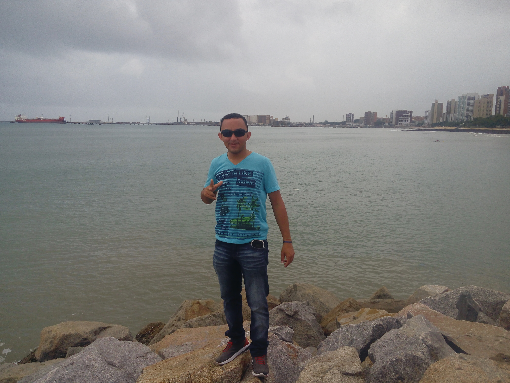

Portifolio Antunis

Sobre mim:
"Estudande de informatica no instituto federal da paraiba (IFPB)"
Nível de Escolaridade:
-
Ensino Fundamental: Jovino Machado (1945);
-
Ensino Médio: Padre Jerônimo Lauwen (1948);
-
Técnico: Informática - IFPB (1950);
Qualificações:
-
Curso de credito e recuperação de dividas: (SEBRAE);
-
Curso em técnicas de vendas: (SEBRAE);
-
Inglês elementar: (Cultura Inglêsa);
Locais onde ja trabalhei:
-
Band Sat Moveis e Eletrodomesticos: (2010-2015)
-
Asl Distribuição: (2016-2018)
Paticipações em Projetos :
-
Projetos de Extensão:
-
Projetos de Ensino:
-
Projetos de Pesquisa:
-
Pesquisa de viabilização de automação predial e potencial econômico, para o IFPB/ Campus Santa Luzia, através da plataforma Arduino
Contatos:
-
Email: wagner-kuba@outlook.com
-
Telefone: +55(83)99623-0309
Voltar para o topo...